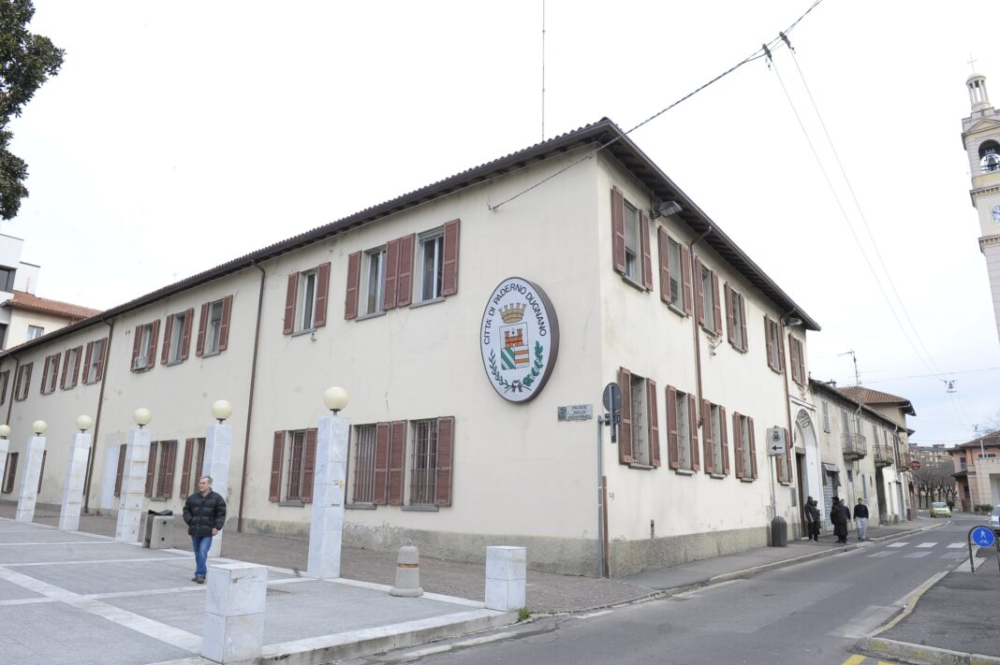

A.S. 2025 / 2026
Benvenuti nel mio
Portfolio Digitale
Mi chiamo Davide Andrea Palazzo e frequento la classe 4^G Informatica presso l'ITCS "Erasmo da Rotterdam" di Bollate.
Questo sito racconta la mia esperienza di P.C.T.O. (Percorsi per le Competenze Trasversali e per l'Orientamento) svolta presso il Comune di Paderno Dugnano nel periodo tra il 09/04/2026 e il 24/04/2026.

Obiettivi del Percorso
Conoscere la P.A.
Osservare da vicino il funzionamento della Pubblica Amministrazione.
Applicare le competenze
Mettere alla prova le competenze informatiche acquisite a scuola in un contesto lavorativo reale.